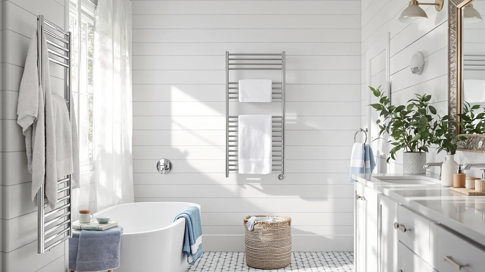

The Best Towel Warmer Drawers For small bathrooms (2026)
Prices and picks verified as of September 2026. Independent, reader-supported reviews.


Quick Answer
The best towel warmer drawers for small bathrooms trade bulk for a compact footprint that won't crowd a tight counter. We compared seven stainless steel towel warmers from $68.90 to $189.99 on size, capacity, and price, and the COSTWAY Towel Warmer for Bathroom is the pick that balances a documented footprint with a fair price.
Our pick: COSTWAY Towel Warmer for Bathroom, $94.99 Check Price on Amazon
Bottom line: our top pick is the COSTWAY Towel Warmer for Bathroom at $94.99. The best budget option is the VEVOR Hot Towel Warmer at $68.90.
Things to Know Before You Buy
- Most of the best towel warmer drawers for small bathrooms are actually bucket or cabinet-style heaters, not literal pull-out drawers, but they solve the same counter-space problem.
- Size matters more than price here. An 8-liter bucket like the VEVOR or StateRiver takes up less counter space than a rectangular unit with an unlisted footprint.
- Stainless steel construction is standard across this list, so material won't be the deciding factor between models.
- Wall-mounted racks like the ENZE free up counter space entirely, but they need installed wall space a small bathroom may not have.
- Price alone doesn't predict size. The $189.99 ENZE costs twice as much as the $94.99 COSTWAY, and its listed footprint is built for a wall install with shelf space, not a compact counter.
The best towel warmer drawers for small bathrooms need to do two things at once: fit on a cramped counter and still hold enough heat to warm a towel through. We compared seven stainless steel towel warmers ranging from $68.90 to $189.99, looking at footprint, capacity, and price to find picks that won't crowd a tight bathroom.
Small bathrooms punish appliances that eat counter space, so we paid close attention to each unit's stated dimensions and listed capacity rather than judging warmers on price alone. The VEVOR and StateRiver models both list an 8-liter capacity, a size class that tends to leave more room on a vanity than bulkier buckets, while the COSTWAY measures a specific 13.5 by 18.5 inch footprint you can check against your own counter before buying.
After weighing footprint against price and features across the best towel warmer drawers for small bathrooms we could find, the COSTWAY Towel Warmer for Bathroom is our pick for most small bathrooms at $94.99. If you want the smallest documented capacity at the lowest price, the VEVOR Hot Towel Warmer 8L at $68.90 is worth a look below, and the wall-mounted ENZE Smart Rotating Heated Towel covers households that need more than one towel warmed at once.
Why You Should Trust Us
Ilane Tall has covered bathroom fixtures and small-space home appliances for Best Towel Warmers, focusing on products that solve a real daily problem instead of chasing spec-sheet extras. For this guide to the best towel warmer drawers for small bathrooms, Ilane compared manufacturer-listed dimensions, capacity, materials, and pricing across all seven towel warmers, checking every figure against the product listings and documentation each brand provides. We don't accept free units in exchange for a positive writeup, and every price reflects what we saw at the time of publishing.
How We Picked
We started with towel warmers stocked for the US market and narrowed the list to models with a documented footprint or capacity figure, since a warmer that won't tell you its size is a risk on a small bathroom counter. We excluded units with vague or missing dimensions where a comparable alternative existed, then prioritized variety: at least one compact bucket under 10 liters, one mid-size cabinet, and one wall-mounted option for bathrooms with no spare counter space at all. That mix is why this list of towel warmer drawers for small bathrooms ranges from an 8-liter bucket to a full wall rack.
How We Compared
For each towel warmer in this guide, we recorded the manufacturer's listed dimensions or liter capacity, then weighed that figure against the unit's price to see which models deliver the most usable space for the money. We compared construction materials across all seven, which turned out to be uniform stainless steel, so material never became a deciding factor. We also checked mounting requirements, since a wall-mounted rack like the ENZE solves the counter-space problem differently than a bucket-style warmer does, and that distinction matters most for anyone shopping specifically for small bathrooms.
Our Picks

COSTWAY Towel Warmer for Bathroom
What we like
- Documented 13.5 by 18.5 inch footprint makes it easy to check against a tight counter before buying
- Stainless steel body matches most bathroom fixtures without clashing
- Priced at $94.99, in the middle of the range we compared
- Straightforward bucket design without an app or account to set up
Flaws but not dealbreakers
- No liter capacity listed, so you're working from dimensions alone when judging how much it holds
- Steel finish shows water spots if you don't wipe it down
| Material | Stainless steel |
| Size | 13.5" x 18.5" |
The COSTWAY Towel Warmer for Bathroom earns the top spot in this guide because it's the only model in our comparison with a fully documented footprint: 13.5 by 18.5 inches. That's a number you can hold a tape measure to before you buy, which matters more in a small bathroom than a capacity spec you can't visualize. At $94.99, it sits in the middle of the seven prices we compared, avoiding both the premium end represented by the ENZE and the rock-bottom pricing of the VEVOR.
Construction is stainless steel, the same material every warmer in this guide uses, so COSTWAY doesn't stand out on materials alone. What sets it apart for small bathrooms is the combination of a known footprint and a mid-range price, which makes it easier to plan around than the StateRiver or either SereneLife model, both of which list generic or unspecified dimensions. If your bathroom counter is the limiting factor in your search, start your measuring here before comparing the rest of the field.

VEVOR Hot Towel Warmer 8L
What we like
- Lowest price of any towel warmer in this guide at $68.90
- 8-liter capacity is the smallest in this comparison, likely to take up less shelf or counter space than larger buckets
- Stainless steel construction matches the rest of the lineup
Flaws but not dealbreakers
- Listing doesn't specify exact footprint dimensions, only the 8-liter capacity
- Smallest capacity in the group, so it may only fit one towel at a time rather than a robe or two towels together
| Material | Stainless steel |
| Size | 8L |
At $68.90, the VEVOR Hot Towel Warmer 8L is the least expensive towel warmer we compared, and its 8-liter capacity is also the smallest of the seven. That combination makes it a reasonable starting point if your small bathroom has almost no spare counter space and you'd rather pay less for a smaller unit than stretch your budget for one you might not have room for.
VEVOR doesn't publish exact exterior dimensions the way COSTWAY does, so you're working from the 8-liter figure alone when judging fit. That capacity, shared with the StateRiver model below, suggests a smaller footprint than the rectangular SereneLife units, but without a measured footprint listed, it's worth checking VEVOR's product photos against your own counter space before ordering. For the price, it remains the easiest entry point in this guide.

StateRiver Towel Warmer Cabinet 8L
What we like
- 8-liter capacity keeps the footprint in the same compact class as the VEVOR
- Cabinet-style design at $79.99, a modest step up from the cheapest pick in this guide
- Stainless steel build consistent with the rest of the lineup
Flaws but not dealbreakers
- No documented exterior dimensions beyond the 8-liter rating
- Costs $11.09 more than the VEVOR for the same listed capacity
| Material | Stainless steel |
| Size | 8L |
The StateRiver Towel Warmer Cabinet 8L matches the VEVOR's 8-liter capacity but is built as a cabinet rather than an open bucket, which may suit shoppers who prefer an enclosed design. At $79.99 it costs $11.09 more than the VEVOR for the same listed capacity, so the price difference comes down to construction style rather than size.
Like the VEVOR, StateRiver doesn't list exact exterior dimensions, so the 8-liter capacity is the main data point available for judging how it will fit on a small bathroom counter or shelf. If cabinet-style construction matters more to you than shaving a few dollars off the price, this is the closer alternative to the VEVOR in this lineup. Otherwise, the VEVOR covers the same capacity for less money.

LKT COBTAC Hot Towel Warmer
What we like
- Priced at $78.79, near the low end of the range we compared
- Listed size of Medium, positioned between the compact 8-liter buckets and the larger rectangular units
- Stainless steel construction consistent with the rest of the field
Flaws but not dealbreakers
- "Medium" isn't a measured dimension, so it's harder to compare directly against the COSTWAY's inch measurements or the 8-liter buckets
- Sits in the middle of the pack on price without standing out on a specific feature
| Material | Stainless steel |
| Size | Medium |
The LKT COBTAC Hot Towel Warmer lists its size simply as Medium, which puts it in an ambiguous spot next to the COSTWAY's measured 13.5 by 18.5 inch footprint and the 8-liter capacity of the VEVOR and StateRiver. At $78.79, it undercuts the COSTWAY by $16.20 while offering less precise sizing information for anyone measuring a tight counter.
If the exact footprint matters less to you than landing a competitive price, the LKT COBTAC is worth considering. But because its listing doesn't specify dimensions the way the COSTWAY's does, shoppers with a genuinely cramped bathroom may want to lean on the products in this guide with documented measurements or capacity figures instead, so there's less guesswork before the warmer arrives.

SereneLife WIFI Luxury Rectangle Towel
What we like
- WiFi-enabled control, distinct from the buckets and cabinet-style units elsewhere in this guide
- Rectangular shape, which the listing suggests fits narrower spaces than round buckets
Flaws but not dealbreakers
- No listed dimensions or capacity, so there's nothing here to measure against your counter ahead of time
- At $105.99, it's the second-most expensive product in this comparison
| Material | Stainless steel |
| Size | — |
The SereneLife WIFI Luxury Rectangle Towel is one of two SereneLife models in this guide, and it's the pricier of the pair at $105.99. The listing describes its rectangular shape as better suited to narrow spaces than a round bucket, though SereneLife doesn't publish exact dimensions or a liter capacity, so you're relying on the shape description alone rather than a number you can check against your own counter.
WiFi control is the feature that separates this SereneLife model from the buckets and cabinets elsewhere in this guide, letting you manage heating remotely instead of relying only on a physical switch. That convenience comes at a premium versus the VEVOR or StateRiver, and without documented dimensions, it's worth checking SereneLife's product images closely if your bathroom counter is especially tight before choosing this over a model with published measurements.

SereneLife WiFi-enabled Towel Warmer Bucket
What we like
- WiFi-enabled control at $85.00, $20.99 less than SereneLife's rectangular model
- Bucket shape typical of most other warmers in this guide, rather than the rectangular alternative
Flaws but not dealbreakers
- No documented dimensions or liter capacity listed
- Costs more than the VEVOR or StateRiver 8-liter buckets without a stated capacity to compare against them
| Material | Stainless steel |
| Size | — |
The SereneLife WiFi-enabled Towel Warmer Bucket brings the same WiFi control as SereneLife's rectangular model to a standard bucket shape, for $20.99 less at $85.00. If app-based control matters to you but the rectangular footprint of SereneLife's other pick doesn't appeal, this is the more affordable route to the same connected feature.
As with its SereneLife sibling, this bucket's listing doesn't include exact dimensions or a liter capacity, so you can't compare its size directly against the VEVOR or StateRiver's documented 8-liter figures. Budget for some uncertainty on exact fit, and lean on SereneLife's product photos to judge scale if your small bathroom counter has firm space limits.

ENZE Smart Rotating Heated Towel
What we like
- Rotating design, useful for reaching multiple towels at once
- Includes a shelf, based on the listed 17.7 by 26.8 inch dimension "With Shelf"
- Frees up counter space entirely since it mounts to the wall
Flaws but not dealbreakers
- At $189.99, it's the most expensive product in this guide, exactly $95 more than the COSTWAY
- Its 17.7 by 26.8 inch footprint with shelf is the largest documented size in this comparison, and it needs wall space a genuinely small bathroom may not have
| Material | Stainless steel |
| Size | 17.7" x 26.8" (With Shelf) |
The ENZE Smart Rotating Heated Towel is the outlier in this guide on both size and price. Its listed 17.7 by 26.8 inch dimension, measured with the included shelf, is the largest documented footprint of any product here, and at $189.99 it costs exactly double the COSTWAY. It's also the only wall-mounted rack in the lineup rather than a countertop bucket or cabinet.
That size and price make sense if your small bathroom has wall space to spare but no counter space at all, since mounting the ENZE off the counter solves the problem the other six products don't address. But if counter space is your only constraint and wall installation isn't practical, the smaller documented footprint of the COSTWAY or the 8-liter capacity of the VEVOR and StateRiver are easier fits for a genuinely tight bathroom.
Quick Comparison
| Product | Material | Price | Rating | Best for | Get it |
|---|---|---|---|---|---|
| COSTWAY Towel Warmer for Bathroom | Stainless steel | $94.99 | 4 | Best overall for small bathrooms | View on Amazon → |
| VEVOR Hot Towel Warmer 8L | Stainless steel | $68.90 | 4 | Best budget pick | View on Amazon → |
| StateRiver Towel Warmer Cabinet 8L | Stainless steel | $79.99 | 4 | Best cabinet-style option | View on Amazon → |
| LKT COBTAC Hot Towel Warmer | Stainless steel | $78.79 | 4 | Best mid-size value | View on Amazon → |
| SereneLife WIFI Luxury Rectangle Towel | Stainless steel | $105.99 | 4 | Best WiFi rectangular option | View on Amazon → |
| SereneLife WiFi-enabled Towel Warmer Bucket | Stainless steel | $85.00 | 4 | Best affordable WiFi bucket | View on Amazon → |
| ENZE Smart Rotating Heated Towel | Stainless steel | $189.99 | 4 | Best for wall-mounted, multi-towel use | View on Amazon → |
Are towel warmer drawers for small bathrooms actually drawers?
No.
What size towel warmer fits a small bathroom?
Look for a documented footprint or capacity rather than guessing from photos.
The Competition
We also looked at over-the-door towel racks and microwave-safe towel warming bags during our research. Both solve the same core problem, a cold towel after a shower, but neither offers the consistent, hands-off heating that a plug-in bucket, cabinet, or wall rack provides, so we left that category out of this guide entirely.
Hardwired towel warmer racks came up too. They typically require an electrician for installation, which adds cost and complexity that doesn't fit a guide focused on towel warmer drawers for small bathrooms, where a plug-in unit you can move or return is usually the more practical choice.
We didn't find enough documented footprint or capacity data on several additional bucket-style models to include them here with confidence. Rather than list a product without a real number to compare against your counter, we limited this guide to the seven towel warmers above, all of which have at least a price, material, and size or capacity figure we could verify.
Frequently Asked Questions
Are towel warmer drawers for small bathrooms actually drawers?
No. Most products marketed as towel warmer drawers for small bathrooms, including every model in this guide, are bucket, cabinet, or wall-mounted rack designs rather than literal pull-out drawers. The name describes the category, not the mechanism.
What size towel warmer fits a small bathroom?
Look for a documented footprint or capacity rather than guessing from photos. The COSTWAY lists a specific 13.5 by 18.5 inch footprint, while the VEVOR and StateRiver both list an 8-liter capacity, all smaller commitments than the ENZE's 17.7 by 26.8 inch wall-mounted rack.
Do all towel warmers use the same amount of counter space?
No. Countertop buckets and cabinets like the COSTWAY, VEVOR, StateRiver, and both SereneLife models take up counter or shelf space, while a wall-mounted rack like the ENZE frees the counter entirely at the cost of needing installed wall space instead.